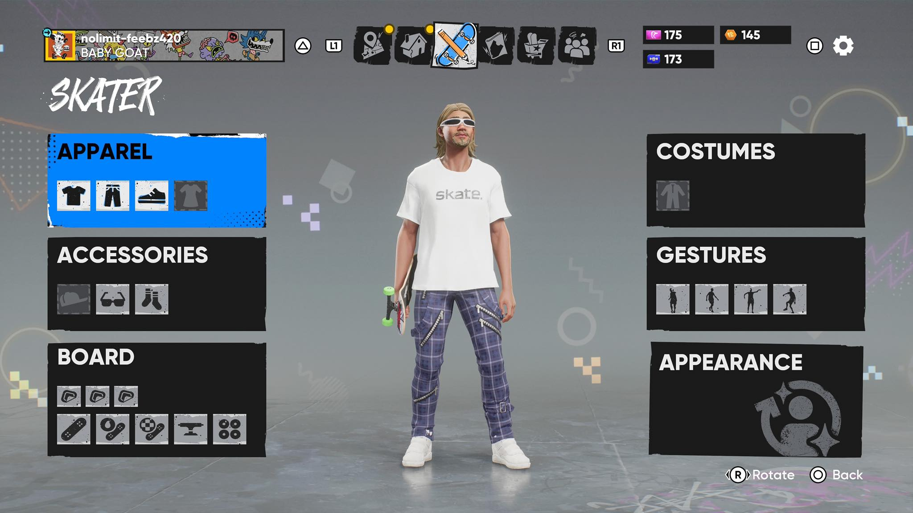
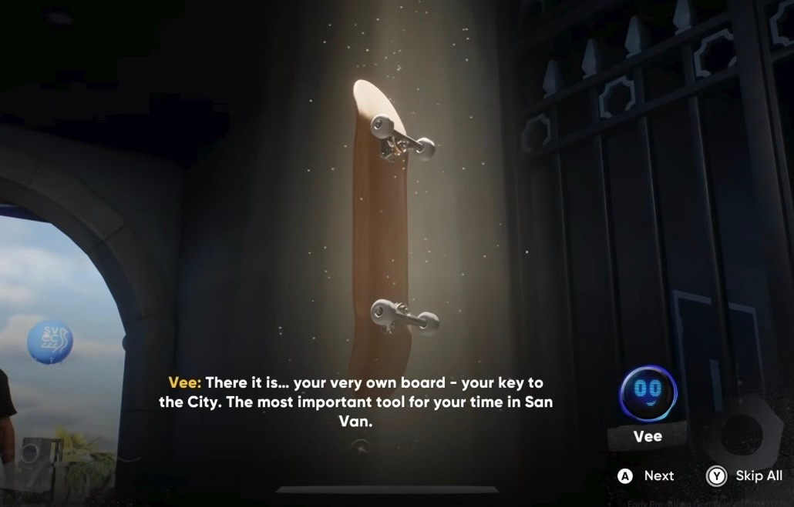

The game Skate by Full Circle(EA): Community,Immersion, & Why we play !!
In this site I would like to explore the world of "Skate" and the feeling of community. Why individuals are draw to play, and how this game has evolved into what is is today, now including suggestion of story. More details to be explained later down below :D

This image is cover art for the fourth game update released in September of 2025, which was huge since Skate 3 coming out in 2010.
This video is the opening cutscene to Skate which introduces you to the feeling of the game itself as well as the world. The images as well as music chosen truly add to that feeling of endless possibility.
Can you already sense an answer to the question "Why we Play"? it is Wundt and Lessing's ideas that are seen through this in Skate: "Pleasure in vigorous activity" and "Joy in "being a cause" ". That joy is described as "pleasure in triumphing over obstales, the joy of success, victory". To add on; "Lessing thought it gave the child a deeper sense of his own reality" (note 1).
Gameplay:

